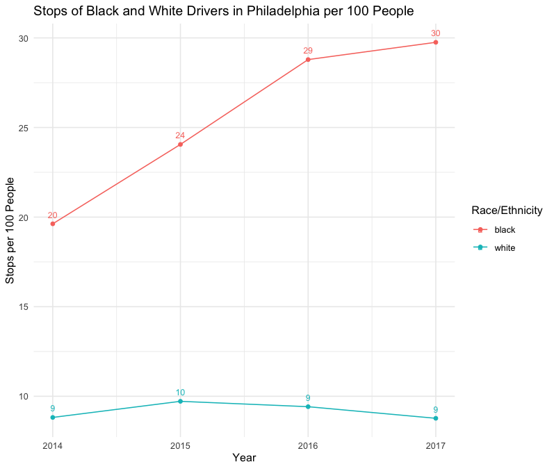

RQ: How do police traffic stops and outcomes vary by demographic groups (i.e. race/ethnicity, age, gender) in two geographically adjacent cities?
Goal: Help both policymakers and citizens understand what policing looks like in their communities. Accountability in policing is crucial, and information empowers us to act when we can see how inequities manifest, especially between different racial identities.
We sourced data from the Stanford Open Policing Project
In 2012, Camden disbanded its police department to root out corruption and give the city a clean slate to reduce its high rates of violent crime.
Our analysis spans from 2014-2017, after the new police department was built with a more community-focused approach
